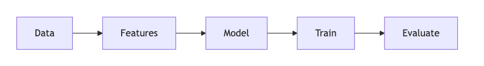
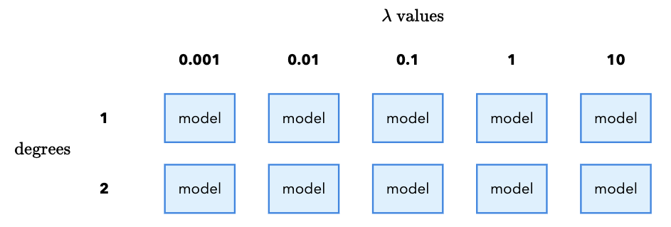
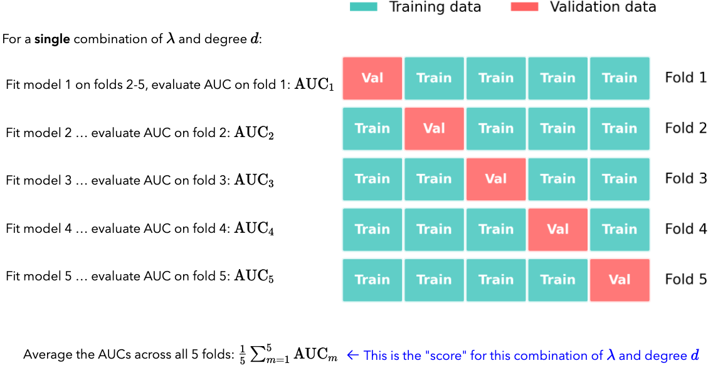

Worksheet 3#
Cross Validation and Fairness
—TODO your name here
Collaboration Statement
TODO brief statement on the nature of your collaboration.
TODO your collaborator’s names here.
Learning Objectives#
Practice following the ML process end-to-end with a new dataset
Learn how to tune hyperparameters with cross-validation
Visualize ROC curves and explore decision thresholds with interactive widgets
Examine different model fairness criterion
Setup#
import numpy as np
import pandas as pd
import seaborn as sns
import matplotlib.pyplot as plt
from sklearn.linear_model import LogisticRegression
from sklearn.preprocessing import StandardScaler
from sklearn.pipeline import make_pipeline
from sklearn.model_selection import cross_val_score
from sklearn.metrics import roc_curve, roc_auc_score, confusion_matrix
from ipywidgets import interact_manual
Motivation: Public Insurance Coverage#
In this worksheet, we work with the ACSPublicCoverage task from the folktables library. This dataset comes from the US Census American Community Survey and predicts whether an individual has public health insurance coverage.
Suppose we have been hired to work at the Massachusetts state public health agency that wants to identify residents who are likely eligible for public coverage so it can proactively reach out and help them enroll.
Our task is to build a classification model that will help social workers identify individuals as part of this outreach program. The features in this task include demographic and socioeconomic variables:
AGEP: age of personDEAR: hearing difficultyDEYE: vision difficultyDIS: disabilityDREM: cognitive difficultyESP: parent’s employment statusFER: recently gave birthMAR: marital statusMIG: mobility status (recently moved or not)MIL: military servicePINCP: total personal incomeRACE: raceSCHL: schooling attainment
And the outcome is defined as follows:
We’ll now follow the ML process start to finish with this dataset, introducing some of the new concepts we’ve learned in the past few classes:

1. Data [1 pt]#
Like we’ve seen on Homework 2, we need to prepare the data into a format our model can use. This begins by considering the nature of our features:
Some features are numeric, where the value itself is meaningful and order matters. For example:
AGEP(age)PINCP(personal income): higher values mean more income.SCHL(educational attainment): codes 1-24 represent increasing education levels, where 0 means no schooling completed and 24 means a doctorate degree.
Other features are categorical where the codes are arbitrary labels with no ordering. For example:
MAR(marital status): coded 1-5, where 1=Married, 2=Widowed, 3=Divorced, 4=Separated, 5=Never married.ESR(employment status): 1=Civilian employed, 2=Civilian employed part-time, …, 6=Not in labor force.
Standard scaling#
As we briefly examined in Activity 11, it is often beneficial to standardize the numeric features so that they are roughly on the same scale. This helps gradient descent converge faster, and also prevents numeric overflow/underflow issues if we happen to be taking exponentials like we do in logistic regression. Specifically, the standardization of a feature column \(x_j\) is defined as:
Where \(\text{mean}_j\) is the mean of the feature and \(\text{std}_j\) is the standard deviation of the feature. These correspond exactly to the NumPy functions np.mean() and np.std().
This results in the transformed feature having an updated mean of 0 and an updated standard deviation of 1, which ensures that all of the variables have the same spread and scale. The code was provided on how to do this in HW 2, but now let’s implement it ourselves:
def standardize_feat(x_col: pd.Series) -> pd.Series:
"""
Rescales x_col to have mean 0 and standard dev 1.
Args:
x_col: the feature column to transform
Returns:
The standardized column
"""
return None
if __name__ == "__main__":
# Test standardize_feat
test_col = pd.Series([0, 2, 0, 4, 5])
standardized = standardize_feat(test_col)
# Check that mean is approximately 0
assert abs(np.mean(standardized)) < 1e-5, "Standardized column should have mean 0"
# Check that standard deviation is approximately 1
assert abs(np.std(standardized) - 1.0) < 1e-5, "Standardized column should have standard deviation 1"
This gives us an opportunity to look at another core piece of Pandas functionality: pd.apply()
In Python, we can pass functions as parameters to other functions. pd.apply() takes as a first parameter a function and applies that function to each column in the Dataframe. For example:
# Create a dataframe with two columns: A and B
df = pd.DataFrame({'A': [1, 2, 3], 'B': [4, 5, 6]})
# a function that squares each element in the column
def square(x):
return x * x
# returns a transformed dataframe with each column squared
df.apply(square)
The above apply() operation will return the dataframe with every column squared.
Complete the prepare_data() function below for standardizing the numeric columns using pandas apply() and standardize_feat():
def prepare_data(X_df: pd.DataFrame) -> pd.DataFrame:
"""Prepare the public insurance coverage dataframe for modeling.
Args:
df: raw X dataframe
Returns:
X: feature matrix as pandas DataFrame
"""
# Copy the dataframe to avoid modifying the original
X = X_df.copy()
# One-hot encode categorical columns using pd.get_dummies(dtype=int)
categorical_cols = ['ANC', 'DEAR', 'DEYE', 'DIS', 'DREM', 'ESP', 'ESR', 'FER', 'MAR', 'MIG', 'MIL', 'SEX']
X = pd.get_dummies(X, columns=categorical_cols, dtype=int)
# TODO complete standardizing the numeric columns using apply() and standardize_feat
numeric_cols = ['AGEP', 'SCHL', 'PINCP']
# X[numeric_cols] = None
return X
if __name__ == "__main__":
# Test prepare_data
pub_cov = pd.read_csv('~/COMSC-335/data/public_coverage/X_pub_cov_train.csv')
pub_cov_feats = prepare_data(pub_cov)
assert np.abs(np.mean(pub_cov_feats['AGEP'])) < 1e-5, "AGEP should have mean 0 after standardization"
assert np.abs(np.std(pub_cov_feats['AGEP']) - 1.0) < 1e-5, "AGEP should have std 1 after standardization"
assert 'MIL_0' in pub_cov_feats.columns, "MIL_0 should be one-hot encoded"
assert 'MIL_1' in pub_cov_feats.columns, "MIL_1 should be one-hot encoded"
assert 'MIL_2' in pub_cov_feats.columns, "MIL_2 should be one-hot encoded"
2. Features and Model: using Pipeline [1 pt]#
Now that the data is prepared, let’s build our features and model.
We saw in Activity 7 that we can use the PolynomialFeatures transformer to add polynomial features to our data. In that activity, we “tuned” both the degree of the polynomial features and the regularization hyperparameter manually just by trying different values and seeing what worked best. In practice, we should treat the degree of the polynomial features as a hyperparameter as well and tune both using cross validation.
To better organize our code, sklearn provides the Pipeline class to chain together feature engineering and model steps. The way it works is that we pass a list of tuples to the Pipeline constructor, where each tuple contains the name of the step and the step itself. For example, the following pipeline begins by applying a StandardScaler transformer followed by a LinearRegression model:
from sklearn.pipeline import Pipeline
pipeline = Pipeline(
[
('features_scaler', StandardScaler()),
('model_linreg', LinearRegression())
]
)
We can then call fit() and predict() on the entire pipeline just like we would with a model:
pipeline.fit(X_train, y_train)
pipeline.predict(X_test)
2.1: Complete the build_classification_pipeline() function below, which returns a Pipeline with two named steps:
features_poly: aPolynomialFeatures()object withdegree=1model_logreg: aLogisticRegression()object withmax_iter=1000
from sklearn.pipeline import Pipeline
from sklearn.preprocessing import PolynomialFeatures
from sklearn.linear_model import LogisticRegression
def build_classification_pipeline() -> Pipeline:
"""
Build a pipeline with two named steps:
- `features_poly`: a `PolynomialFeatures()` object with `degree=1`
- `model_logreg`: a `LogisticRegression()` object with `max_iter=1000`
Returns:
pipeline: a Pipeline object with the two steps defined above
"""
# TODO your code here
pipeline = None
return pipeline
if __name__ == "__main__":
pipeline = build_classification_pipeline()
print("Pipeline steps:", pipeline.steps)
assert pipeline.steps[0][0] == 'features_poly', "features_poly should be the first step"
assert isinstance(pipeline.steps[0][1], PolynomialFeatures), "features_poly should be a PolynomialFeatures object"
assert pipeline.steps[0][1].degree == 1, "PolynomialFeatures should have degree=1 by default"
assert pipeline.steps[1][0] == 'model_logreg', "model_logreg should be the second step"
assert isinstance(pipeline.steps[1][1], LogisticRegression), "model_logreg should be a LogisticRegression object"
assert pipeline.steps[1][1].max_iter == 1000, "model_logreg should be a LogisticRegression object with max_iter=1000"
Note
We set PolynomialFeatures to degree 1 for now as a default. sklearn has functionality that allows us to vary the degree through our cross validation process in the next section.
By default, LogisticRegression() uses L2 regularization \(\lambda=1\). Let’s use the sklearn function roc_auc_score to evaluate the model on the test data. roc_auc_score takes in the true labels and the predicted probabilities for the positive class as inputs:
roc_auc_score(y_test, pipeline.predict_proba(X_test)[:, 1])
2.2: Complete the code below that fits your pipeline to the training data and scores it on the test data:
if __name__ == "__main__":
X_train = pd.read_csv('~/COMSC-335/data/public_coverage/X_pub_cov_train.csv')
X_train = prepare_data(X_train)
X_test = pd.read_csv('~/COMSC-335/data/public_coverage/X_pub_cov_test.csv')
X_test = prepare_data(X_test)
y_train = pd.read_csv('~/COMSC-335/data/public_coverage/y_pub_cov_train.csv').to_numpy().flatten()
y_test = pd.read_csv('~/COMSC-335/data/public_coverage/y_pub_cov_test.csv').to_numpy().flatten()
# TODO: Fit your pipeline to the training data and use roc_auc_score to score it on the test data
pipeline = None
#test_auc = roc_auc_score(TODO)
print("Pipeline test AUC:", test_auc)
Click to check AUC results
For the default hyperparameter values of \(\lambda=1\) and degree=1, the test AUC should be approximately 0.78-0.79.
3. Train and Evaluate: Using Cross-Validation to Tune Hyperparameters [1 pt]#
Let’s try to improve upon this AUC by tuning the hyperparameters.
Instead of manually trying different values (and continually peeking at the test set), we’ll use cross validation to systematically “grid search” over all possible hyperparameter values. Suppose we want to try the following values for our regularization hyperparameters:
\(\lambda \in \{0.001, 0.01, 0.1, 1, 10\}\)
degree \(\in \{1, 2\}\)
Each combination of \(\lambda\) and degree requires us to fit a new model. In total, that means we need to fit 10 models (5 \(\lambda\) values x 2 degree values). It is called a “grid search” because we imagine placing the \(\lambda\) values on the x-axis and the degree values on the y-axis. Each combination of \(\lambda\) and degree is a cell in the grid, and we fit a model for each cell:

Furthermore, we want to safeguard against random variation in our results by using cross validation. From Class 11, cross validation works by taking our training data and splitting it into \(k\) equal-sized folds. For each fold \(m\), we train on the other \(k-1\) folds and evaluate on the fold. We then average the results across all \(k\) folds to get a single score.
We do this for each combination of \(\lambda\) and degree, and then pick the combination that gives the highest average AUC. For each fold, we again have to fit a new model since the training data is different for each fold:

If \(k=5\), and we have the given \(\lambda\) and degree values above, how many different models in total do we end up fitting?
3.1 TODO your response
Click for 3.1 solution and takeaway
For 5 \(\lambda\) values and 2 degree values, we need to fit 10 models. Then, if we use 5-fold cross validation, we need to fit 10 x 5 = 50 models in total.
This is the downside of cross validation: if the models are complex or the dataset is large, the number of models to fit can quickly become computationally expensive.
While setting this grid search up manually is possible (you can imagine a nested for loop that iterates over the \(\lambda\) values and the degree values), sklearn conveniently provides the GridSearchCV class to do this.
The way it works is that we pass it a pipeline, a dictionary of hyperparameters to search over called the param_grid, and the number of folds for cross validation. The param_grid dictionary keys are the names of the hyperparameters and the values are a list of all values to search over. There is a special string name that sklearn looks for to indicate that the hyperparameter is part of the grid search. We first give the pipeline step name, and then double underscores __, and then the hyperparameter name.
For example, if we wanted to specify the \(\lambda\) values, we would use the key: model_logreg__C. This tells sklearn to look for the C hyperparameter in the model_logreg step of the pipeline.
Then, the values for the \(\lambda\) values would be the list of values to search over. For example:
param_grid = {
'model_logreg__C': [0.01, 0.1, 1]
}
Note
Just like with the RidgeRegression model, sklearn frustratingly does not call \(\lambda\) the hyperparameter name. Instead, it calls it C, which is the inverse of \(\lambda\): \(C = 1/\lambda\)
Once we have the param_grid specified, we can pass it to the GridSearchCV class. The constructor takes the pipeline, the param_grid, the number of folds for cross validation, and the scoring metric. For example, if we wanted to use five folds and the AUC score as the scoring metric, we would write:
grid_search = GridSearchCV(pipeline, param_grid=param_grid, cv=5, scoring='roc_auc', verbose=2)
The verbose=2 tells sklearn to print the amount of time each cv fold takes to fit.
We can then call fit() on the GridSearchCV object to fit all of the models in the grid:
grid_search.fit(X_train, y_train)
Finally, we can access the best model and best hyperparameters by accessing the best_estimator_ and best_params_ attributes of the GridSearchCV object:
best_model = grid_search.best_estimator_
best_params = grid_search.best_params_
We can interact with best_model the same way we have with any other model:
best_model.fit(X_train, y_train)
test_scores = best_model.predict_proba(X_test)[:, 1]
3.2. Complete the code below to set up the grid search over the given \(C\) values and degrees:[1,2].
The model_logreg__C entry in param_grid is given for you. Make sure to separate the degree name from the Pipeline step name with double underscores __. What are the best hyperparameter settings you’ve found, and what is the test set AUC?
Best hyperparameters::
Degree:
\(C\):
Test set AUC: TODO your response
Runtime note
This grid search may take 1-2 minutes to run depending on JupyterHub available resources.
from sklearn.model_selection import GridSearchCV
if __name__ == "__main__":
param_grid = {
# TODO add the degree entry for the features_poly step
'TODO': [],
'model_logreg__C': [0.01, 0.1, 1]
}
# TODO specify and fit the grid search with the following parameters:
# cv=5
# scoring='roc_auc'
# verbose=2
grid_search = None
grid_search.fit(X_train, y_train)
# TODO Save the best model and best hyperparameters
best_model = None
best_params = None
# TODO compute the test AUC of the best model
test_auc = None
print("Best model:", best_model)
print("Best hyperparameters:", best_params)
print("Test AUC of best model:", test_auc)
Click to check param_grid syntax and best hyperparameters
The param_grid syntax is a bit tricky. The key is to use double underscores __ to indicate that the hyperparameter is part of the pipeline step. In our case, we have two steps in the pipeline: features_poly and model_logreg. The two steps have hyperparameters degree and C, respectively. So, we specify the param_grid as follows:
param_grid = {
'features_poly__degree': [1, 2],
'model_logreg__C': [0.01, 0.1, 1, 10, 100],
}
You should find that the best hyperparameters are:
Degree: 2
C: 0.1
You should also find that the test set AUC is in the 0.81 - 0.82 range. That increase may not seem like much, but in practice an acceptability threshold for a model is often \(\ge0.80\) AUC. So, small improvements can be meaningful. ML engineers will frequently spend a lot of time tuning hyperparameters to get that last bit of improvement.
4. Evaluate: ROC Curves and thresholds [1.25 pts]#
Now that we’ve found the best model via cross-validation, let’s visualize its performance and explore how different decision thresholds affect outcomes for our public insurance outreach program.
4.1 Matplotlib and ROC Curves#
Up until this point, we have been using seaborn for plotting. We prefer seaborn whenever possible because it makes it easy to create nice-looking plots with minimal code that connect with pandas DataFrames. However, to have the greatest degree of control over your visualizations, it is important to also understand the fundamentals of matplotlib.
Matplotlib reading
Please read through the first three sections of the matplotlib quickstart guide: “A simple example,” “Parts of a figure,” and “Coding style.”
In particular, the “Coding style” section is useful for understanding matplotlib examples you might see online that differ based on whether they are using the “object-oriented” or “pyplot” approach.
Try out the code examples in the cell below. You can use the rest of the quickstart guide as a reference for when you need to customize your plots.
# standard import idiom for matplotlib
import matplotlib.pyplot as plt
if __name__ == "__main__":
# TODO try out code examples from "a simple example" section in the quickstart guide
pass
We saw in Class 10 that the ROC curve (Receiver Operating Characteristic) plots the True Positive Rate (TPR) against the False Positive Rate (FPR) at varying classification thresholds:
\(\text{TPR} = \frac{TP}{TP + FN}\), the proportion of actual positives correctly identified
\(\text{FPR} = \frac{FP}{FP + TN}\), the proportion of actual negatives incorrectly flagged
We can compute the TPR and FPR across a range of thresholds by using the roc_curve(y_true, y_scores) function, which takes the true labels and the predicted probabilities for the positive class as inputs.
Read the documentation of sklearn’s roc_curve function to learn more about the tuple it returns. Then, complete the code below:
if __name__ == "__main__":
# TODO compute predicted probabilities for the positive class from best_model
y_scores = None
# TODO: compute the ROC curve using roc_curve()
fpr_vals, tpr_vals, thresholds = None, None, None
tpr_vals and fpr_vals are NumPy arrays that correspond to the true positive rate and false positive rate across a sweep of thresholds. That means that if we plot fpr_vals on the x-axis and tpr_vals on the y-axis, we will get the ROC curve. Let’s do this using matplotlib. In the cell below, create a fig with a single ax object using plt.subplots().
Then, plot the ROC curve by calling ax.plot(fpr_vals, tpr_vals).
Finally, give the plot an appropriate title, x-axis label, and y-axis label using ax.set_title(), ax.set_xlabel(), and ax.set_ylabel().
Feel free to use other matplotlib functionality from the guide to customize the plot as you see fit.
if __name__ == "__main__":
fig, ax = plt.subplots()
# TODO your ROC curve plotting code here
ROC curve visualization (click for a possible solution)
The code below completes all of the labels that the question asks:
fig, ax = plt.subplots()
ax.plot(fpr_vals, tpr_vals)
ax.set_xlabel('False Positive Rate')
ax.set_ylabel('True Positive Rate')
ax.set_title('ROC Curve for public health insurance coverage model')
We can also start to get creative with how we customize our plots. For example, we can add the random-classifier line to the plot by calling ax.plot([0, 1], [0, 1], '--'). We can also add a legend by calling ax.legend() and then adding the label argument to each plot line:
ax.plot(fpr_vals, tpr_vals, label='Our model')
ax.plot([0, 1], [0, 1], '--', label='Random classifier')
ax.legend()
4.2 Threshold widget for precision and recall#
Let’s now explore how different thresholds affect the precision and recall of our model. Let’s first compute the precision and recall, given a set of predictions y_pred and the true labels y_true. The formulas for precision and recall are given by:
\(\text{Precision} = \frac{TP}{TP + FP}\)
\(\text{Recall} = \frac{TP}{TP + FN}\)
To do so, we’ll need to call the confusion_matrix(y_true, y_pred) function, which returns a confusion matrix as a NumPy array. Refer to Activity 11 for an example of how to use it:
from sklearn.metrics import confusion_matrix
def compute_precision_recall(y_pred: np.ndarray, y_true: np.ndarray) -> tuple[float, float]:
"""Compute precision and recall.
Args:
y_pred: Predicted labels
y_true: True labels
Returns:
(precision, recall) as a tuple of floats
"""
# TODO extract the true positive, false positive, false negative, and true negative counts from the confusion matrix
tn, fp, fn, tp = None, None, None, None
precision = 0
recall = 0
return precision, recall
if __name__ == "__main__":
y_pred = [0, 1, 0, 1, 1]
y_true = [0, 1, 0, 0, 1]
precision, recall = compute_precision_recall(y_pred, y_true)
assert precision == 2/3, "Precision should be 2/3"
assert recall == 1, "Recall should be 1"
Let’s now build an interactive widget that allows us to compute the precision and recall for different thresholds. Unlike the other widgets in earlier assignments, the function here is provided inline with a special line of code at the top of the cell: @interact_manual(threshold=(0.1, 0.9, 0.1)). Code that begins with @ is called a “decorator” and is a way to modify the function below it – you can read more about Python decorators at this link, but for our purposes it is sufficient to know that we can use them to add interactivity to our functions by mirroring the parameter names in our plotting functions. You can also read this tutorial if you’d like to learn more about ipywidgets.
In this case, we are telling Python to create a widget with a “Run Interact” button, and by specifying the threshold=(0.1, 0.9, 0.1) parameter, we are telling it to create a slider widget with values between 0.1 and 0.9 in increments of 0.1. When the user changes the slider, the function below it is called with the new threshold parameter value.
Complete the explore_threshold() function below to compute and print precision and recall at the given threshold. The thresholded predictions are computed as:
from ipywidgets import interact_manual
if __name__ == "__main__":
@interact_manual(threshold=(0.1, 0.9, 0.1))
def explore_threshold(threshold=0.5):
y_scores = best_model.predict_proba(X_test)[:, 1]
# TODO compute your best model predictions at the given threshold
y_pred = None
# TODO compute the precision and recall at the new threshold
print(f"Precision: {precision:.3f}")
print(f"Recall: {recall:.3f}")
Click to check results for threshold of 0.5
At threshold=0.5, you should see approximately:
Recall: ~0.54
Precision: ~0.75
4.3 Threshold Tradeoffs#
For our public health insurance outreach scenario, we have that:
We are using our model to help identify residents who are likely eligible for public coverage so the outreach program can proactively contact them and help them enroll.
In this setting:
A false negative means we miss someone who is actually eligible for public coverage.
A false positive means we contact someone who is not actually eligible for public coverage.
Answer the following questions:
Which type of error is more costly in this scenario, and why?
Using your threshold widget above, what happens to precision and recall as the threshold increases?
Based on your answers to 1 and 2, would you choose a threshold higher or lower than 0.5?
Your responses:
TODO
TODO
TODO
5. Fairness and Decision-Making [1.25 pts]#
The dataset, and thus our model includes RACE as a feature, which is coded as 1 for White respondents and 0 for non-White respondents. In this section, we’ll evaluate the fairness of the model with respect to this protected attribute.
5.1 Group-Specific ROC Curves#
In Class 11, we discussed the separation criterion for fairness, which requires that the model has equal TPR and FPR across all groups. Because the ROC curve plots TPR against FPR, we can visualize whether the separation criterion is met by plotting the ROC curve separately for each group. Complete the code below to compute the per-group ROC curves and AUC values. This time, since we are plotting multiple ROC curves, pass a label argument to the ax.plot() calls with the group name and the test AUC in the label string:
if __name__ == "__main__":
# Predicted probabilities for the positive class
y_scores = best_model.predict_proba(X_test)[:, 1]
# Extract the race column from the test set
race_test = X_test['RACE'].values
# TODO create boolean masks for White and non-White groups
is_white = (race_test == 1)
is_nonwhite = (race_test == 0)
# TODO compute the ROC curve and AUC for the White group
# use boolean indexing for both y_test, and y_scores for is_white
fpr_white, tpr_white = None, None
#auc_white = roc_auc_score("TODO")
# TODO compute the ROC curve and AUC for the non-White group
# use boolean indexing for both y_test, and y_scores for is_nonwhite
fpr_nonwhite, tpr_nonwhite = None, None
#auc_nonwhite = roc_auc_score("TODO")
# TODO plot both ROC curves with the appropriate labels containing AUC values
fig, ax = plt.subplots()
Click to check group-specific ROC curve plotting
After computing the per-group ROC curves and AUC values, we can plot them using the code below:
ax.plot(fpr_white, tpr_white, label=f'White (AUC={auc_white:.3f})')
ax.plot(fpr_nonwhite, tpr_nonwhite, label=f'Non-White (AUC={auc_nonwhite:.3f})')
ax.legend()
You should see that the White group has a higher AUC than the non-White group, indicating that the model is better at distinguishing positive from negative cases for White individuals. Because there is a fairly significant difference in AUC between the two groups, we can conclude that the model does not satisfy the separation criterion.
5.2 Equal Opportunity Widget#
Another fairness criterion we discussed is equal opportunity, which means that the TPR should be equal across groups:
One way to work toward this is to use different thresholds for each group. The widget below lets you explore per-group thresholds and see how they affect TPR and accuracy.
Complete the code explore_equal_opportunity() function below. It should closely mirror the explore_threshold() function,
but you now need to compute the recall (TPR) for each group according to the is_white and is_nonwhite boolean masks. You should additionally add the @interact_manual decorator with two threshold parameters:
t_white=(0.1, 0.9, 0.05)t_nonwhite=(0.1, 0.9, 0.05)
These parameters tell the widget to create two sliders that correspond to the inputs to the explore_equal_opportunity() function, with a range of 0.1 to 0.9 and a step size of 0.05.
if __name__ == "__main__":
# TODO add the @interact_manual decorator with threshold_white and threshold_nonwhite
def explore_equal_opportunity(t_white=0.5, t_nonwhite=0.5):
y_scores = best_model.predict_proba(X_test)[:, 1]
# TODO generate predictions for y_scores[is_white] using t_white
y_pred_white = None
precision_white, recall_white = compute_precision_recall(y_pred_white, y_test[is_white])
# TODO generate predictions for the is_nonwhite group, using t_nonwhite
y_pred_nonwhite = None
precision_nonwhite, recall_nonwhite = compute_precision_recall(y_pred_nonwhite, y_test[is_nonwhite])
print(f"Recall (White): {recall_white:.3f}")
print(f"Recall (Non-White): {recall_nonwhite:.3f}")
# Computes overall accuracy by combining predictions from both groups
y_pred_all = np.zeros_like(y_test)
y_pred_all[is_white] = y_pred_white
y_pred_all[is_nonwhite] = y_pred_nonwhite
accuracy = np.mean(y_pred_all == y_test)
print(f"Overall Accuracy: {accuracy:.3f}")
Using the equal opportunity widget above, answer the following questions:
Same threshold (0.5): Set both thresholds to 0.5. Report the TPR (recall) for both groups, as well as the overall accuracy.
Equal opportunity: Adjust the thresholds until the TPR values are approximately equal across groups. What thresholds did you use? Are there any significant shifts in overall accuracy?
Overall Recommendation: If you were an advisor to the public health outreach program, given what you have explored with the equal opportunity widget here and the precision-recall tradeoff widget in 4.3, what thresholds would you choose to use for this model? It is totally fine to speculate on this question as long as you provide some rationale from what you have observed.
Your responses:
TPR white: TODO
TPR nonwhite: TODO
Overall accuracy: TODO
TODO
TODO
Recall (TPR) values check for the default threshold of 0.5
At threshold=0.5 for both groups, you should see approximately:
TPR white: ~0.56
TPR nonwhite: ~0.51
Overall accuracy: ~0.77
6. Reflection [0.5 pts]#
6.1 How much time did it take you to complete this worksheet?
Your Response: TODO
6.2 What is one thing you have a better understanding of after completing this worksheet and going though the class content this week? This could be about the concepts, the math, or the code.
Your Response: TODO
6.3 What questions or points of confusion do you have about the material covered in the past week of class?
Your Response: TODO
Acknowledgments#
Dataset: folktables (Ding et al., 2021), based on US Census ACS data.
Equal opportunity criterion: Hardt, Price, and Srebro (2016), “Equality of Opportunity in Supervised Learning.”
Fairness concepts: fairmlbook.org (Barocas, Hardt, Narayanan).